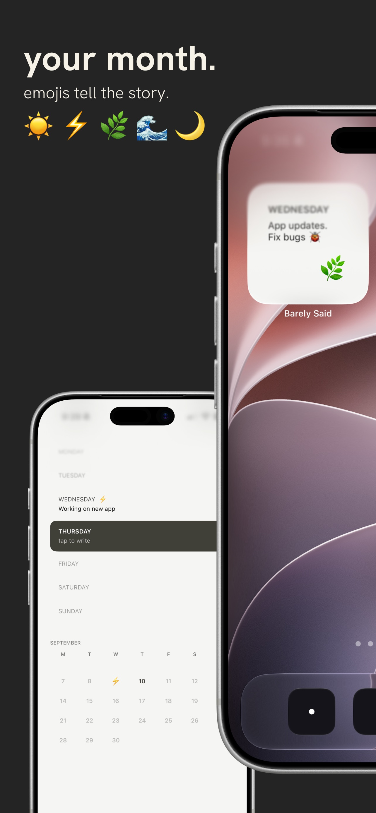
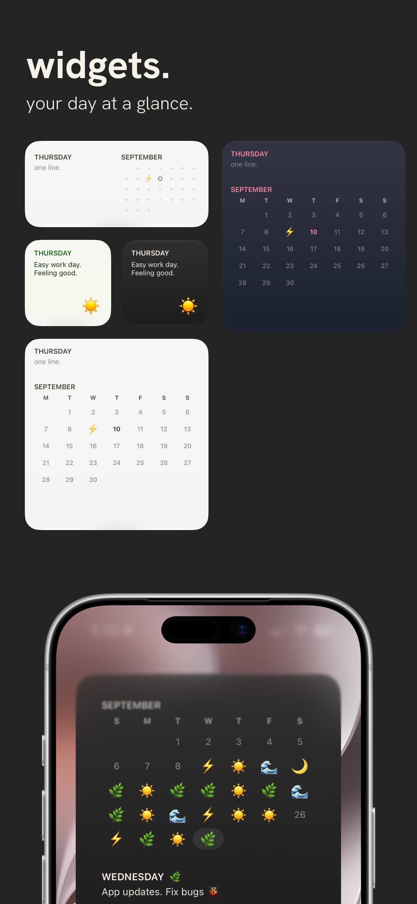

One Line
Designed, built, and shipped a one-line journal for iOS. One sentence per day. No prompts, no streaks, no guilt.
3 weeks
- · Product design
- · iOS development
- · Design systems
- · Accessibility
- · Xcode
- · SwiftUI
- · Figma
Journaling apps assume you have something to say. Long-form entries, writing prompts, mood trackers, photo attachments, voice memos. The blank page stares at you and you close the app.
Most days, you don't have a paragraph. You have one sentence. "Good coffee with Sam." "Tough meeting but I handled it." "Nothing happened and that was fine."
Design, build, and ship a journal that asks for one line per day. No prompts. No streaks. No guilt for missing a day. Prove that the smallest possible entry is the one people actually write.
80 characters. One emoji. One day. That's your journal.
Three layers, each one barely enough:
- One line. 80-character limit. Forces you to say what matters, not everything that happened.
- One emoji. Pick a day marker. Not a mood score. Not a rating. Just a symbol that feels right.
- Calendar view. A month at a glance. Emojis dot the days you wrote. Tap any day to read or edit.
One line, one emoji


Open the app. See this week. Tap today. Pick an emoji, write one sentence. Done button saves and dismisses. Under 10 seconds.
Calendar


Month view with emoji dots on days you wrote. Spacious 38pt cells, rounded corners. Tap any day to read or write. Swipe between months.
Widgets and Duo


Small widget shows today's emoji and entry count. Calendar widget puts the month view right on the home screen. iPhone Duo layout splits calendar left, entry right.
Pro
Free: write, read, 4 themes. $4.99 one-time opens 7 premium themes, Search, On This Day, and Export. On This Day shows what you wrote on this date before. Search finds entries by text. Export makes a plain-text file with emoji labels.
Streaks were the first thing cut
Every journaling app has streaks. They work for about a week. Then you miss a day, the streak breaks, and you feel bad enough to stop entirely. Said has no streak counter. Miss a day and the app says nothing. You come back when you have something to say.
80 characters was tested, not guessed
Started at 140 (like old Twitter). People padded sentences to fill the space. Dropped to 100, still too generous. 80 forced compression: you say what actually matters. The best entries turned out to be 40-60 characters long.
The most competitive category
DayGram, Little Memory, Day One, Momento. Said walked into the most crowded room of the three apps. The differentiation is the ceiling: those apps grow into full journals. Said never will. One line. That's it.